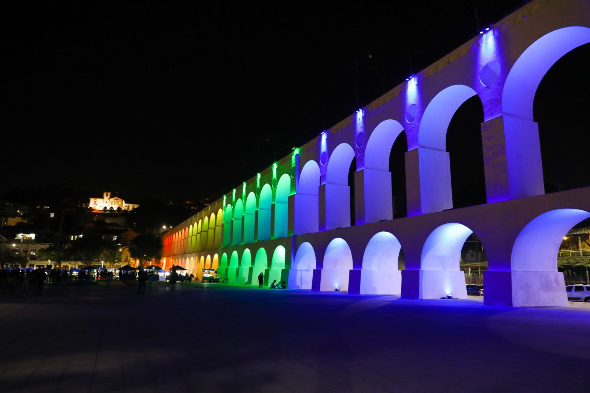

CRISTO REDENTOR
A estátua do Cristo Redentor está situada no Parque Nacional da Tijuca, área de preservação ambiental na cidade. O monumento está a 710 metros acima do nível do mar e a vista do alto do morro é impressionante.
É necessário subir 220 degraus para alcançar os pés do Cristo. Considerado umas das 7 maravilhas do mundo.

PÃO DE AÇÚCAR
O Pão de Açúcar é um complexo de morros localizado no bairro da Urca. É composto pelo morro do Pão de Açúcar, morro da Urca e morro da Babilônia. Junto com a estátua do Cristo Redentor, é o maior cartão-postal da cidade do Rio de Janeiro e um dos mais famosos do Brasil.
É uma referência turística internacional para a cidade do Rio de Janeiro.
PRAIAS
Além de ser famosa pelas águas limpas e pela extensa faixa de areia fofa, a praia oferece, em algumas partes da orla, quiosques para receber os turistas.
O clima tranquilo permite fugir da agitação urbana do Rio de Janeiro, o que a torna ideal para descansar sem precisar ir muito longe das áreas centrais da cidade.
FUNK
O funk carioca aparece na década de 80. Sua origem é a mistura das batidas eletrônicas do hip hop, da poesia do rap e da habilidade dos DJ's em mesclar batidas repetitivas com a melodia.
A temática das letras está ligada diretamente ao cotidiano da favela ou do subúrbio carioca.

LAPA
Os Arcos da Lapa, também conhecido como Aqueduto da Carioca, é parada obrigatória para quem vai ao Rio de Janeiro. É um dos cartões-postais da cidade.
Eles foram construídos no século XVIII com o objetivo de transportar água do Rio Carioca para o Morro de Santo Antônio. Hoje, além de ponto turístico, também serve de passagem de bondinho.
FAVELAS
As favelas na cidade do Rio de Janeiro começaram a ter início no final do século XIX quando várias transformações sócioeconômicas pelas quais o Brasil passava e transformações locais começaram a inchar a área central da cidade, formando os primeiros cortiços.
Acredita-se que a primeira favela carioca tenha surgido em 1897 no antigo Morro de Santo Antônio, no entanto a favela mais antiga do país situa-se no Morro da Providência, onde alguns soldados provenientes da Guerra de Canudos começaram a morar.